One photo in. A light, game-ready 3D model out, with its texture kept.
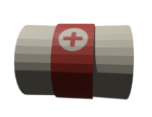
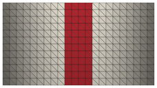
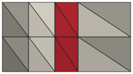
Making a 3D model by hand takes hours. Models made automatically from photos have far too many triangles for games, AR and the web.
Standard simplification (QEM) looks only at geometry. When it removes triangles it smears the colours, logos and edges of the texture.
Train our own photo-to-3D generator, then simplify with D-QEM: QEM plus a Transformer that learns which edges carry texture detail.
For every 3D point the model looks at the matching spot in the photo and answers two questions: is this point inside the object, and what colour is it? Asking this for millions of points gives the full shape.
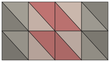
Concept illustration: same triangle budget for QEM and D-QEM. Real results will compare against PyMeshLab QEM.
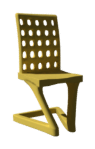
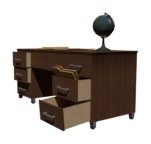
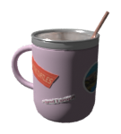
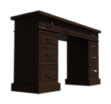
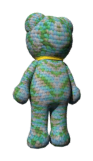
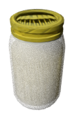
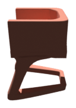
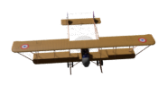
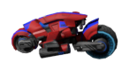
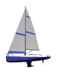
Rendered by us in Blender (Cycles, Kaggle GPU). Labels come from our own algorithm: a KD-tree finds the surface, a 256³ voxel flood fill from outside marks every point as inside or outside.
| What | Metric | Compared with |
|---|---|---|
| Shape | IoU · Chamfer distance · F-score | 702 test objects + 217 from 40 categories never seen in training |
| Texture | PSNR · SSIM · LPIPS on rendered views | ground-truth renders |
| Simplification | same metrics at 50 / 25 / 10 % faces | Original vs PyMeshLab QEM vs our QEM vs D-QEM |
Upload a photo, move the slider, compare the three meshes side by side with their scores.
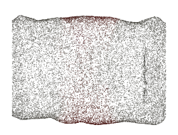
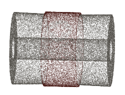
Sanity test on a small set: shape and colour learned (IoU 0.67), camera alignment 100 % correct. GEN3D-Gen v1 is now trained on 3,118 objects; test IoU / Chamfer / F-score: added after evaluation.
PyTorch · DINOv2 (timm) · Blender 4.2 · trimesh · SciPy · Kaggle T4 GPUs · Gradio